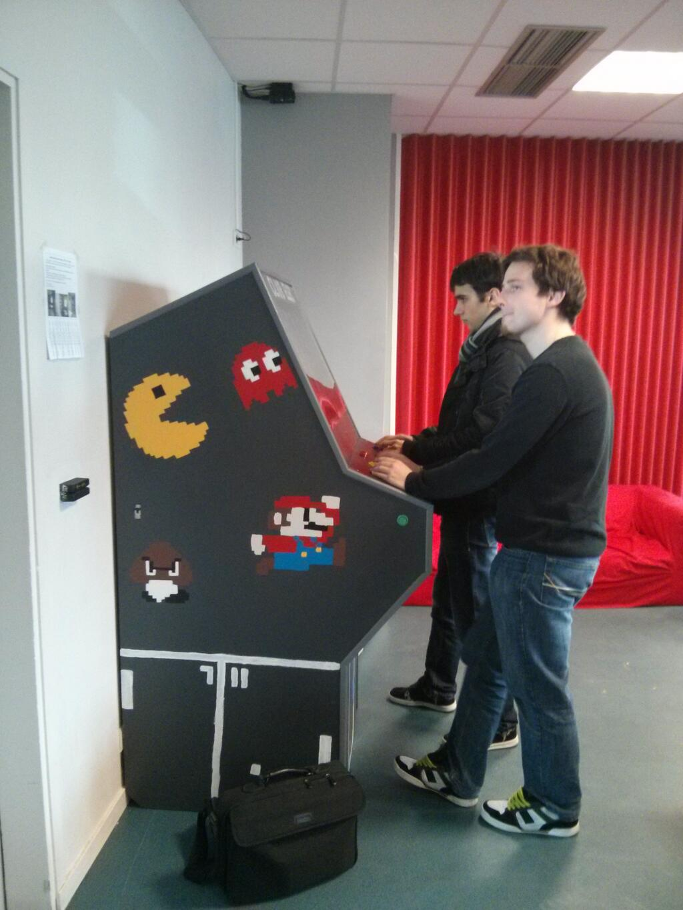
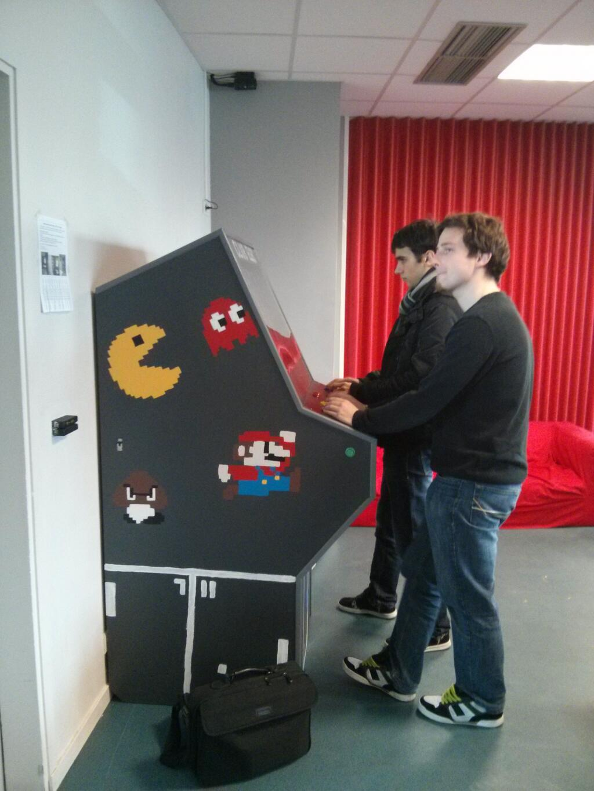

Projet réalisé dans le cadre du club élec avec Thomas Abot, Thibault Charles et Victor Dorez. Une fois finie elle a été placée dans le foyer de l'ISEN Brest pour que les étudiants puissent en profiter et jouer à des jeux open-source.
cométences mises en œuvre:
- Administration linux (pc sous ArchLinux car est une distribution légère et modulable)
- Création de circuits électroniques pour le panel
- Travail manuel / Bricolage
Pour plus d'information vous pouvez consulter la page github ici.
quelques images pendant la fabrication:


 
